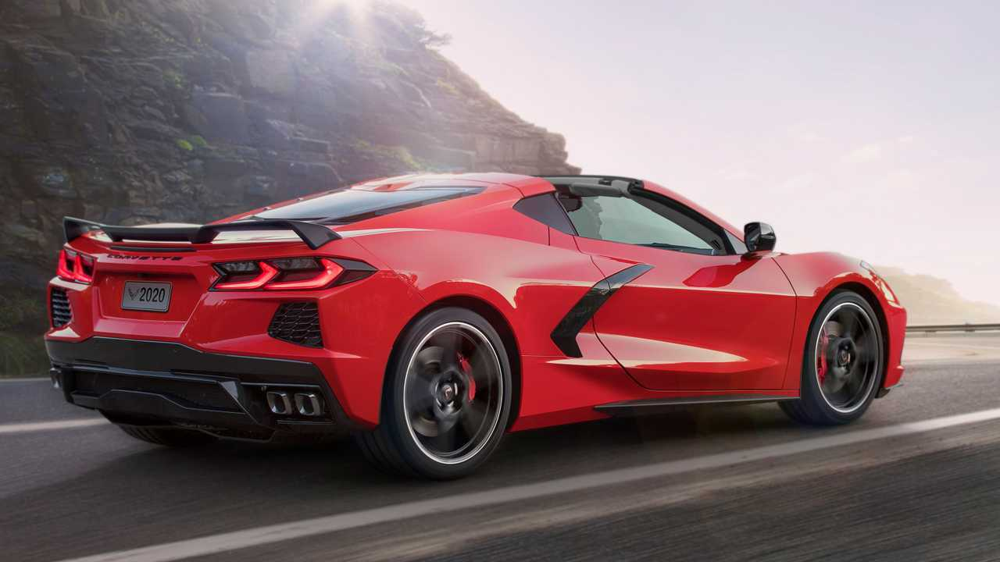

For decades, Chevrolet engineers toyed with the idea of a mid-engine Corvette to improve handling and performance. Corvette chief engineer Zora Arkus-Duntov was an early advocate for this layout, but cost and production challenges prevented it from becoming a reality for many years.
By the late 2010s, Chevrolet finally committed to the idea, aiming to push the Corvette into supercar territory while keeping it relatively affordable compared to European rivals.

Development and Background:
For decades, Chevrolet engineers
toyed with the idea of a mid-engine Corvette to improve handling and performance. Corvette chief
engineer Zora Arkus-Duntov was an early advocate for this layout, but cost and production challenges
prevented it from becoming a reality for many years.
By the late 2010s, Chevrolet finally committed to the idea, aiming to push the Corvette into
supercar territory while keeping it relatively affordable compared to European rivals.
Zora Arkus-Duntov, often referred to as the "Father of the Corvette," strongly advocated for
the concept of a mid-engine Corvette beginning with the experimental Chevrolet Engineering
Research Vehicle (CERV) program in the early 1960s. This project proved the feasability of a
mid-engine but due to budgetary constraints, it never saw the light of day, that is, until now.
Chevrolet turned this long-held dream into a reality, unveiling the first-ever production mid-engine
Corvette to the world.
C8 Corvette Stingray (2020–Present):
Unveiled on July 18, 2019, the 2020 Corvette Stingray debuted as
the first mid-engine Corvette.
Engine: 6.2L LT2 V8, producing 490 hp (495 hp with Z51
package).
Performance: 0-60 mph in 2.9 seconds (with Z51 Performance
Package).
Transmission: First Corvette to use an 8-speed dual-clutch
automatic (no manual option).
Interior: Driver-focused cockpit with a 12-inch digital instrument
cluster and a modern infotainment system.
C8 Corvette Z06 (2023–Present):
The 2023 Chevrolet Corvette Z06, a track-focused,
high-performance version of the C8 Corvette making it a true American supercar.Naturally
aspirated 5.5L LT6 V8 with a flat-plane crank. Produces 670 hp, making it the most powerful
naturally aspirated V8 in a production car. The unconventional V-8 hooks up to an eight-speed
dual-clutch automatic transmission and rear-wheel drive.
Performance is explosive, and at our test
track, the Z06 blasted to 60 mph in just 2.6 seconds and sailed through the quarter-mile mark in
10.5 seconds at 131 mph. The convertible needed just 0.1 second longer to reach 60 mph in our testing.
Rev limit: 8,600 RPM, inspired by race cars. More aggressive aerodynamics and a wider stance than the
Stingray.
C8 Corvette E-Ray (2024–Present):
First-ever hybrid, all-wheel-drive Corvette.
Combines the LT2 V8 with an electric motor for a total of 655 hp.
Can drive in stealth mode (electric-only) for short distances.
0-60 mph in 2.5 seconds, making it the quickest Corvette ever.The E-Ray is something of a middle
child between the base Stingray and the flat-plane-crankshaft, screaming-wild Z06. Its headline
feature is an all-new hybrid powertrain (the biggest of its firsts)
Indeed, in our testing, the E-Ray proved to be every bit the match of the Z06 in straight-line
0–60 and quarter-mile times and came up just short of the Z06 in our at-the-limit handling
exercises—despite being as much as 261 pounds heavier. So it’s just as quick as the Z06, and
its e-AWD system should theoretically ensure a boost in front-end traction.
Impact and Legacy:
The mid-engine layout places the C8 in direct competition with exotic supercars like Ferrari, Lamborghini, and McLaren.
It retains the Corvette’s tradition of high performance at a relatively affordable price (starting around $65,000 for the base model).
The introduction of hybrid technology and AWD marks a shift in Corvette’s future, possibly paving the way for electrification.
The Corvette's legacy is a testament to American automotive ingenuity, and as the years passed,
the quest for perfection presented formidable challenges for the company. With each generation,
enthusiasts held their breath, anticipating the next evolution of this celebrated sports car.
Unveiled on July 18, 2019, at a special event held in Tustin, California, at the General Motors'
Technical Center, the automotive world witnesses the electrifying debut of the C8 Corvette,
pushing boundaries beyond imagination.